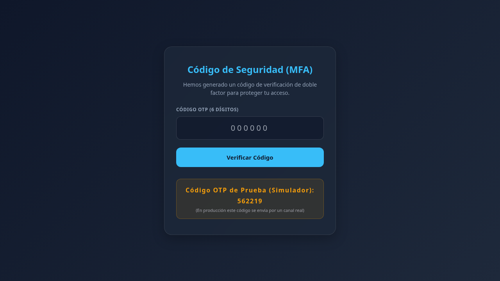
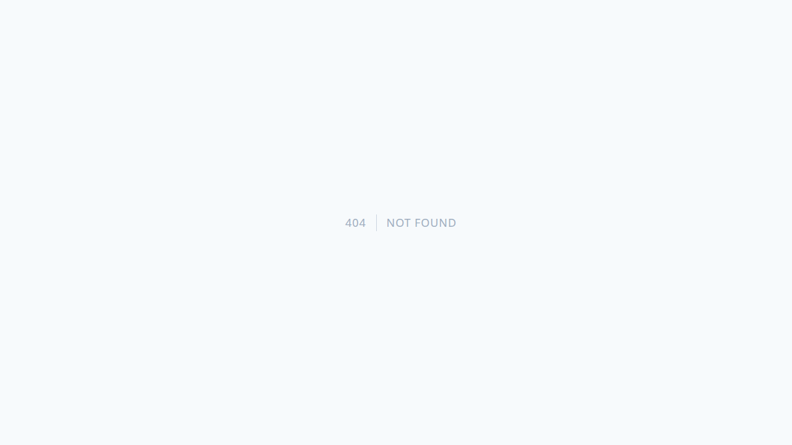

Manual de Usuario del Sistema Municipal
Este manual documenta el funcionamiento y los flujos operativos de la plataforma.
1. Acceso e Ingreso al Sistema
Para ingresar a la plataforma, abre tu navegador y dirígete a la URL del sistema.
Pantalla de Inicio de Sesión
Ingresa tu correo electrónico institucional y contraseña.

[!IMPORTANT] El sistema exige un código de autenticación de doble factor (MFA) que será enviado a tu correo institucional tras introducir tus credenciales.
2. Panel de Control (Dashboard)
Una vez autenticado, accederás al Dashboard principal del sistema.

Aquí podrás ver:
- Indicadores clave de rendimiento.
- Resumen de actividades recientes.
- Accesos directos a tus módulos de trabajo asignados.
3. Administración de Usuarios
El módulo de usuarios permite al rol administrador dar de alta, editar y asignar roles a los funcionarios municipales.
